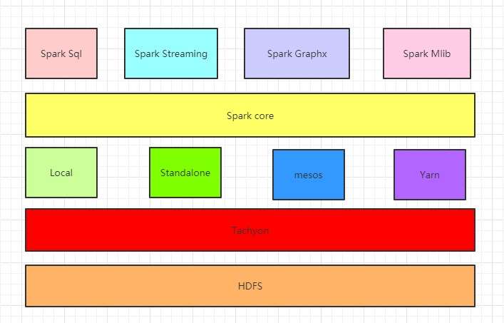

开始
这段时间真的是忙，但大多数是自己给自己加戏，但是呢？感觉也没多少进步，一会想刷题，一会想看书，一会想娱乐…
最后一事无成，惭愧惭愧。
所以，想找一个时机，专注于学一样东西，Spark是不二之选。
目标
选择 Spark 的原因是，它是目前我最经常使用的工具。但是呢，目前对它的使用仅限于 pyspark，SparkSQL，Spark on Yarn，越深入使用，越对这个框架赞不绝口。把原本龟速的 MapReduce 和 hive 甩飞两条街，以及对计算机内存的合理运用，有效减少了很多 OOM 和 StackOverflow 使得我完成了很多“不可思议”的壮举。这次是想深入了解原理性的东西（RDD）以及更多函数式编程的思想和内置数学计算函数。最后能够达到使用时随心所欲吧，或许学到一半转Flink了哈哈哈哈。
方法
以官方文档为脉络，从头走到尾。个别酌情跳过。其余不懂的地方大概按这个顺序作为参考或者了解细节
- 官方文档
- 看别人博客
- 源码解析教程
- 源码
- Spark论文
真的要开始了
确定一下版本。故意安装不同的版本有助于对比个别更新。
- 单机版：Spark 3.0.1
- 集群版：2.4.0-cdh6.2.1
下载
官网下载: http://spark.apache.org/downloads.html
基础知识
- Spark : 实现快速通用的集群计算平台
- 基于MapReduce的计算引擎通常会将中间结果输出到磁盘上，进行存储和容错。而Spark是基于内存的计算，大部分的计算依赖于内存和缓存。所以速度会快。
- 能快速融入
Hadoop大数据生态系统，函数的名称、数据类型又接近或相同于python的数据分析包Pandas和numpy。学习成本超级无敌低。 - 有极强的语言兼容性，Scala是默认的编程语言，Java无缝支持(都是基于
JVM)。另外支持python(pyspark)，R (SparkR) - 有极强的场景兼容性：Spark几乎贯穿了大数据的各种场合，大数据分析、挖掘、批处理、实时查询、流处理、图计算、机器学习。（几乎和 Java后端 的Spring全家桶一样了）
- 有极强的平台兼容性：除了兼容
Hadoop大数据生态，还可以单机运行，运行在Mesos里面，运行在k8s里面… - 机器学习，兼容（tensorflow）（pytorch）还有自己实现的常用机器学习算法库…
- 没了，想想别人要买多贵多贵的显卡去跑
ML，而我只需要把 tf 代码丢集群跑分布式，而且速度一点也不慢就激动地睡不着。
Spark的组件

- SparkCore：将分布式数据抽象为弹性分布式数据集（RDD），实现了应用任务调度、RPC、序列化和压缩，并为运行在其上的上层组件提供API。
- SparkSQL：Spark Sql 是Spark来操作结构化数据的程序包，可以让我使用SQL语句的方式来查询数据，Spark支持多种数据源，包含Hive表、parquest、text文本、csv以及JSON等内容。
- SparkStreaming： 是Spark提供的实时数据进行流式计算的组件。(
Impala、presto、ClickHouse比它快，但可做参考，优点是可以插入删除，而前两个只能查询) - MLlib：提供常用机器学习算法的实现库。
- GraphX：提供一个分布式图计算框架，能高效进行图计算。
- BlinkDB：用于在海量数据上进行交互式SQL的近似查询引擎。
- Tachyon：以内存为中心高容错的的分布式文件系统。(用不到, 应该可以当做内存型
HDFS)
RDD(弹性分布式数据集)
- RDD是Spark的核心数据模型，但是个抽象类，全称为
Resillient Distributed Dataset，即弹性分布式数据集。 - RDD在抽象上来说是一种元素集合，包含了数据。它是被分区的，分为多个分区，每个分区分布在集群中的不同节点上，从而让RDD中的数据可以被并行操作。(每个分区分配一个线程，多线程同时写入多个文件。并不是多线程同时写入一个文件)
- RDD通常通过
Hadoop上的文件，即HDFS文件或者Hive表，来进行创建；有时也可以通过应用程序中的集合来创建。(废话) - RDD最重要的特性就是，提供了容错性，可以自动从节点失败中恢复过来（极其重要，它能使不稳定的低配的计算节点从计算超时或者网络传输超时中恢复过来并继续计算而不崩溃或者写入部分数据导致数据出现重复或缺失）。即如果某个节点上的RDD Partition，因为节点故障，导致数据丢了，那么RDD会自动通过自己的数据来源重新计算该partition。这一切对使用者是透明的。
- RDD的数据默认情况下存放在内存中的，但是在内存资源不足时，Spark会自动将RDD数据写入磁盘。（弹性）
明天计划
- 在开始啃官方文档前，用一天扫一遍Spark的专业术语。
- 学习时，没有统一规划知识结构。先以笔记形式记录，学到哪记到哪。等Spark专题完成后（不会吧不会吧不可能吧？？？如果能专心啃完，就就奖励自己一台MacBook Air M2）再来一次整理知识点~
- 内容会随时修改更新，错别字请指出~